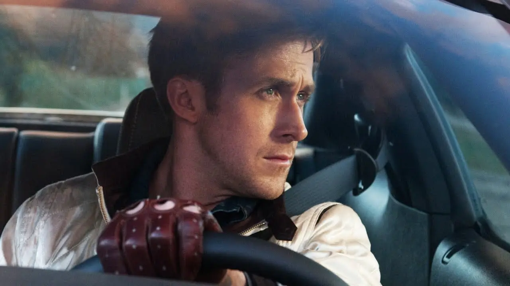
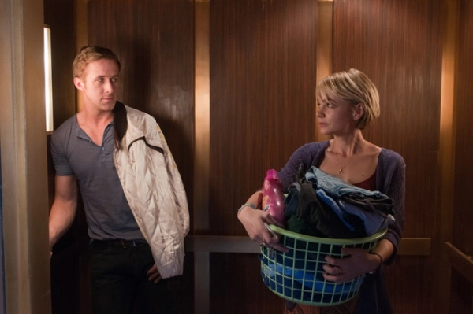
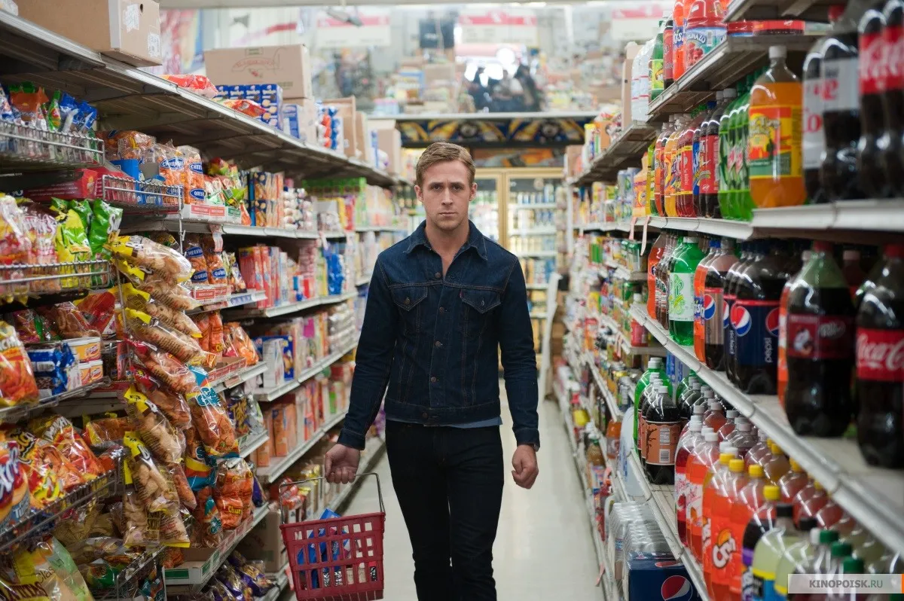
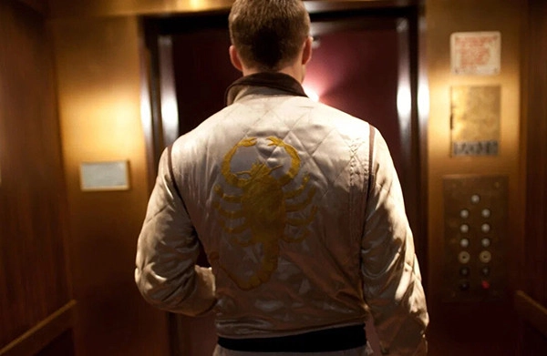
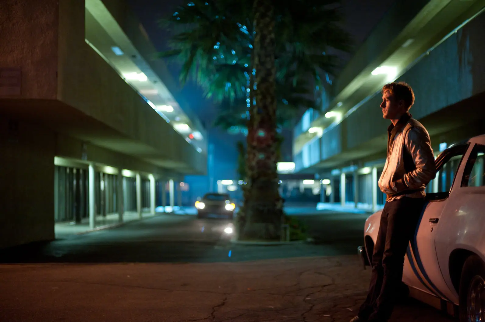
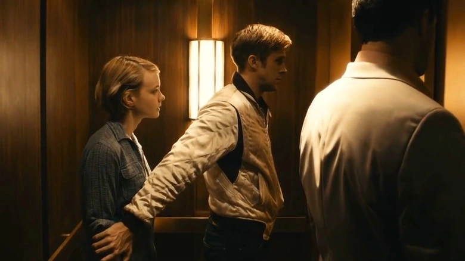
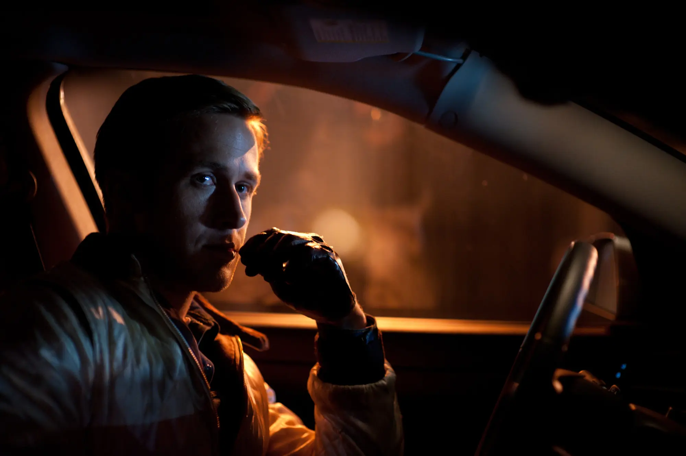

Дневной образ: утилитарный минимализм и кожаные перчатки
Днём главный герой — обычный автомеханик и каскадёр. Его одежда проста, функциональна и неприметна. Он не пытается выделиться в толпе Лос-Анджелеса, скорее наоборот — мимикрирует под обычного парня из рабочей среды. Но даже в этой простоте чувствуется строгая дисциплина и готовность к действию в любую секунду.
Образ: Классические прямые джинсы Levi's лоу-кост сегмента, простая белая футболка или денимовая рубашка, надетая поверх неё. Но главный элемент, который выдаёт в нём профессионала — коричневые кожаные перчатки для вождения с перфорацией. Они плотно облегают руки, символизируя тотальный контроль над машиной и дистанцию, которую он держит между собой и остальным миром. Драйвер не оставляет отпечатков пальцев и не подпускает никого близко.


Внутреннее состояние: Одиночество и рутина. До встречи с соседкой Айрин и её сыном Драйвер существует словно на автопилоте. Его повседневная одежда — это удобная рабочая униформа человека, у которого нет привязанностей, нет прошлого и, кажется, нет будущего. Это чистый холст, который начинает заполняться красками только тогда, когда в его жизни появляется смысл защищать кого-то ещё.
Атласный бомбер: доспехи неонового рыцаря
Центральная вещь фильма, ставшая культовой сразу после премьеры — стёганый атласный бомбер цвета слоновой кости с огромным золотым скорпионом на спине. Райан Гослинг сам принимал участие в его создании, вдохновляясь корейскими сувенирными куртками 1950-х годов. Этот бомбер нарушает все правила маскировки ночного гонщика, но выполняет важнейшую драматургическую роль.


Образ: Бомбер сияет под неоновыми огнями ночного Лос-Анджелеса. Скорпион на спине — это прямая отсылка к притче «Скорпион и Лягушка», которую позже цитируют в фильме. Драйвер может казаться мягким и спокойным, но его природа смертоносна, и он не может её изменить. Куртка выглядит чужеродно в грязных автомастерских и дешёвых мотелях, превращая героя в сказочного рыцаря, который по ошибке оказался в криминальном нуарном триллере.
Внутреннее состояние: Бомбер служит Драйверу эмоциональным щитом. Одевая его, он переходит в режим ночного гонщика, готового к смертельному риску. Шёлковая ткань контрастирует с суровым характером героя, подчёркивая его скрытую романтичность и уязвимость, которые он отчаянно пытается защитить от жестокой реальности.
Понравился материал? Вы можете поддержать автора монеткой
Поддержать КиноГидКровавый катарсис: когда маска пропитывается реальностью
По мере того как ставки в криминальной игре растут, визуальная чистота гардероба Драйвера уничтожается. Безупречный светлый бомбер становится главным свидетелем ультранасилия, на которое способен этот парень ради спасения любимых людей.


Образ: В знаменитой сцене в лифте Драйвер сначала нежно целует Айрин, а в следующую секунду жестоко забивает ногами киллера. В этот момент на его сияющем белом бомбере расплываются огромные пятна чужой крови. В финальных сценах он уже не пытается отстирать куртку. Романтический доспех испачкан насилием, а сам Драйвер надевает резиновую маску каскадёра, окончательно превращаясь в призрака и сливаясь со своей криминальной природой.
Внутреннее состояние: Осознание своей сути и трагическое самопожертвование. Драйвер понимает, что его мир слишком опасен для Айрин и её сына. Пятна крови на куртке — это символ того, что «нормальная» жизнь для него закрыта навсегда. В финале, раненый, но живой, он оставляет всё позади и снова уезжает в темноту, оставаясь верным своей животной природе скорпиона.